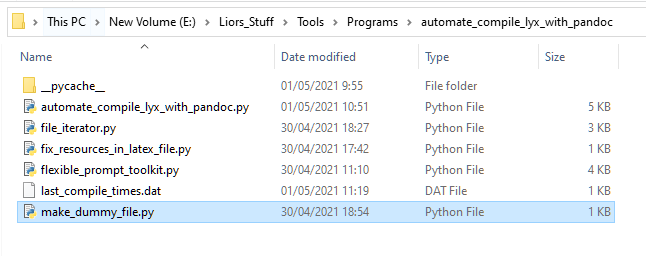
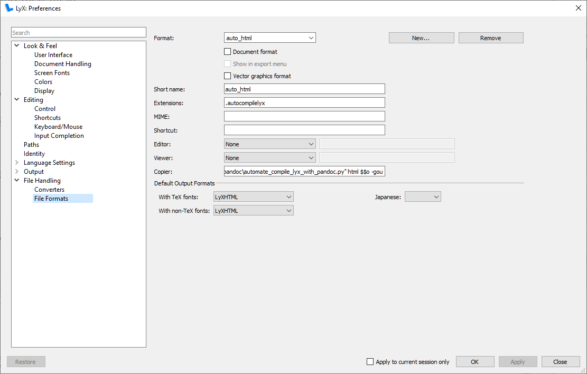
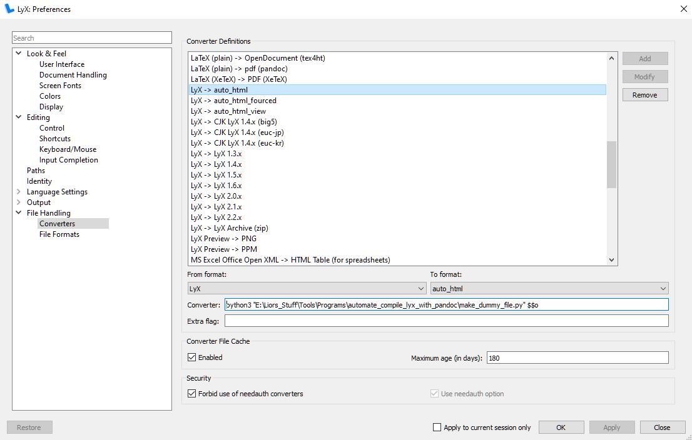
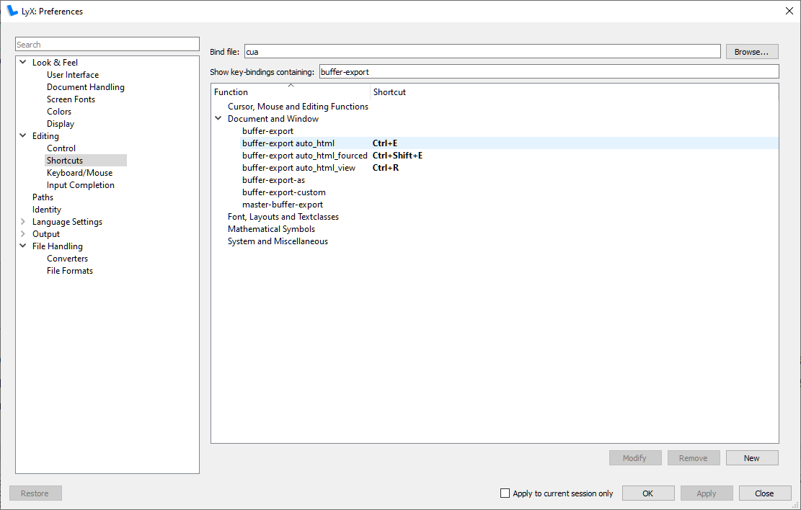

the pupose of this project is to bypass the lyx convertion sequance, wich ruthlessly breaks resource file names in the latex script that is passed to pandoc.
pandoc and lyx are both really grate projects. but as I have found, they really do not mesh together.
the lyx convertion protocal is based on moving the lyx file to some temperary location, doing all the convertions there, and then moving the converted products back to the work dir. during the transfer of the files, I found lyx thwarts pandoc in three ways:
converts all the media resources to .eps files
flattens media/resource files hierarchy - rendering reletive paths broken
adds wierd text “\string” at ends of file paths
altho I have found that 1 could be fragilely overcome in practice by using pdflatex to convert from lyx to latex, and have found that 2 could be overcome in theory (couldn’t make this work) by running pandoc with the flag --resource-path to the origenal directory, I couldn’t find a way to deal with 3. thus I made a python script to salve my problem. this project is that python script.
run with flag -h and you will get:
this is automate_compile_lyx_with_pandoc version 2.1
usage:
python automate_compile_lyx_with_pandoc <out format> <root path> [options]
root path: some path at which to start compiling. if a folder is specified than will run on all lyx files in folder and by default on all lyx files in subfolders.
options:
-cc or --clean-compile: clean compile. compile all. not only files that were changed.
-nr or --not_recursive: don't run on subfolders. only on given folder.
-keps or --keep_eps: don't purge .eps files. (by default this program deletes all .eps files under root.)
-gou or --go_one_up: run on the dirname of the given path. (usefull for lyx shortcuts)
-v or --view: view final file
for help run:
python automate_compile_lyx_with_pandoc -h or --help
for clearing memory of lyx compilation times:
python automate_compile_lyx_with_pandoc --clear-memory
example usage:
python automate_compile_lyx_with_pandoc html E:\Some_path\to_lyx_file.lyx -cc -gouin order for automate_compile_lyx_with_pandoc.py to work, “Lyx\bin” needs to be on PATH. find where you’r Lyx.exe is hiding and add that to your PATH envirment variable, this is a standurd thing to do, here are some links out of hundreds:
to find your Lyx bin folder, you can press start, type lyx, right click on lyx, “open file location”, right click on the link that opens in file explorer and again “open file location”. that should lead you there. my Lyx bin is at: C:\Program Files\LyX 2.3\bin.
in any case, you need to be able to type lyx in cmd and have Lyx open up for this project to work.
usage with .css files:
if the output file type selected is html, than if there is a .css file with the same name as the lyx file, and that is placed at the same folder as the lyx file, than that .css file will be referenced to by the output html. otherwise, if the default_style.css exists next to the automate_compile_lyx_with_pandoc.py file, it will be referanced to. if nither of these exist, an html with no style will be produced.
*WARNING*: lyx is bundled with it’s own version of python 2. this is bad for us, becouse this script was designed to run on python 3. also, lyx automatically proritises it’s own version of python over the global one. so ruinning the command python from within lyx will call it’s local python 2. the solution to this is quite easy. we only call python up via the “python3” command, so there is no room for confusion. if you are like me, and have installed python in such a way that the “python3” command is not recegnised, than you need to fix this. I fixed this by going to the python.exe file, copy pasting it, and renaming the copy to python3. not very elagent, I know, but I couldn’t think of a way this could do any harm, and was to lazy to figure out the propper way to do this.
copy package to somewhere you won’t move it, and that doesnt require admin premitiions to make/edit files. I placed mine at:
E:\Liors_Stuff\Tools\Programs\automate_compile_lyx_with_pandoc

go to Tools Preferances File Handaling File Formats. Click New, fill in the first 2 fields (Format,Short name) with whatever you want, (I filled them both in with auto_html) and then fill in:
Extentions = .autocompilelyx
Copier = python3 <path to automate_compile_lyx_with_pandoc.py> <type your output format here. I wrote “html”> $$o -gou
so in my case it’s Copier = python3 E:\Liors_Stuff\Tools\Programs\automate_compile_lyx_with_pandoc\automate_compile_lyx_with_pandoc.py html $$o -gou
click apply

go to Tools Preferances File Handaling Converters. select:
From format: select “Lyx”
To format: select the name you gave the file format you made (in my case its auto_html).
(in my case it’s autohtml)
Converter: python3 <path to make_dummy_file.py> $$o
(in my case it’s python3 E:\Liors_Stuff\Tools\Programs\automate_compile_lyx_with_pandoc\make_dummy_file.py $$o)
Click Add, click apply

(Optional) - to make a keyboard shortcut:
Tools Preferances Editing Shortcuts New
Function = buffer-export <name of format you chose>
(in my case Function = buffer-export auto_html)
select key binding
click ok, click apply

(Optional) - you can add more key shortcuts that do other things, like fource compile, preview resault, etc. this is done by adding new file formats with slightly differant names, that do the same thing but with othet flags. for example -cc fources compilation of file, even if it is detected that the lyx file was not changed. for full list of flags run automate_compile_lyx_with_pandoc.py with -h flag:
python automate_compile_lyx_with_pandoc.py -h
for each file format redo steps 2 and 3 also, so in my case I have:
auto_html_fourced:
python3 "E:\Liors_Stuff\Tools\Programs\automate_compile_lyx_with_pandoc\automate_compile_lyx_with_pandoc.py" html $$o -gou -ccauto_html_view:
python3 "E:\Liors_Stuff\Tools\Programs\automate_compile_lyx_with_pandoc\automate_compile_lyx_with_pandoc.py" html $$o -gou -vthis file was made with automate_compile_lyx_with_pandoc version 2.1↩︎